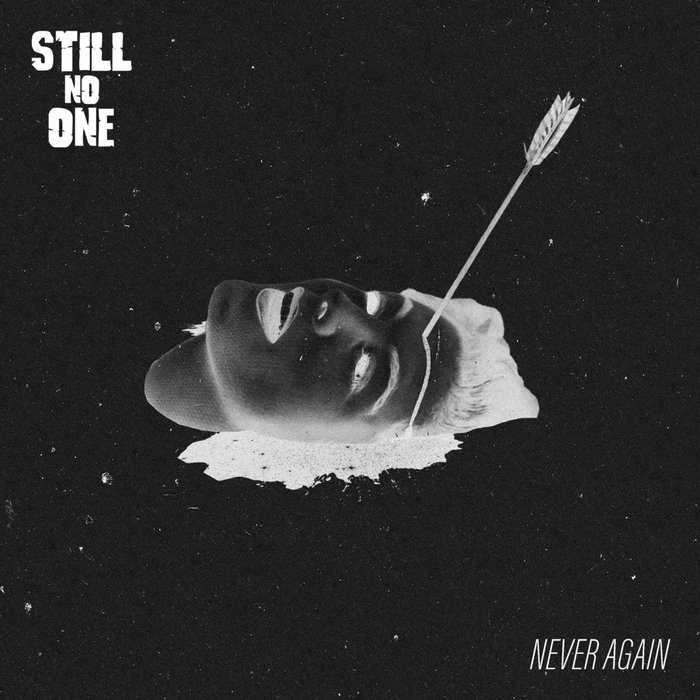

Review
STILL NO ONE - Never Again

Da folgt mir auf Instagram plötzlich eine Skatepunk-Band aus Italien.
Also schaue ich nach, was die machen.
Ein paar Sekunden später lautet die Antwort:
YES!
Vielleicht sollte ich öfter prüfen, wer sich da neuerdings hinter RandaleFUNK herumtreibt.
Still No One kommen aus der Gegend um Padua und räumen nebenbei mit der alten Behauptung auf, die USA und Schweden hätten ein Patent auf Skatepunk. Die Italiener haben offenbar nicht beim Patentamt nachgefragt. Sie spielen das Zeug einfach.
Nach wenigen Takten muss ich an die alten Strung Out denken. Nicht als Kopie. Eher wegen dieser Mischung aus Melodie, Geschwindigkeit und Gitarrenarbeit.
Nicht zu grob. Nicht zu poppig.
Mein Skateboard hängt seit Jahren an der Wand und hat trotzdem kurz vibriert.
Beim Text ist die gute Laune dann vorbei. Da hat jemand ein Versprechen gebrochen, sämtliche Warnzeichen ignoriert und seinem Gegenüber freundlich ins Gesicht gelächelt, während das Messer schon für den Rücken bereitlag.
Der Erzähler möchte keine Aussprache und keine zweite Chance. Er hat genug und würde sich den Untergang dieser Person sogar aus der ersten Reihe ansehen.
Eine besonders reife Form der Konfliktbewältigung ist das vermutlich nicht.
Als Skatepunk-Refrain taugt der Groll dafür ausgezeichnet.
Gerade diese persönliche Wut steht dem Song. Hier wird keine große Gesellschaftsrede gehalten. Jemand hat Vertrauen zerlegt, jetzt ist endgültig Schluss. Das „Never Again“ meint hier ziemlich eindeutig: Mit dir bin ich durch.
Die Single ist seit dem 5. Juni 2026 draußen. Still No One gibt es bereits seit 2019; den South-Bay-Skatepunk der späten Neunziger nennt die Band selbst als wichtigen Ausgangspunkt.
Das hört man.
Zum Glück haben sie daraus keine historische Vorführung gemacht.
Die USA und Schweden dürfen ihre Skatepunk-Urkunden behalten. Italien liefert auch ohne Papierkram.
Jetzt darf mir auf Instagram gerne mal wieder eine schlechte Band folgen.
Ich brauche schließlich Material zum Meckern.
An Italian skate-punk band suddenly follows me on Instagram.
So I check out what they do.
A few seconds later, the answer is:
YES!
Maybe I should pay more attention to who has recently started hanging around RandaleFUNK.
Still No One are from the Padua area, and they casually put an old claim to rest: the United States and Sweden do not hold the patent on skate punk. Apparently, the Italians never asked the patent office. They just play the stuff.
After a few bars, I have to think of the old Strung Out. Not as a copy. It is more about that combination of melody, speed, and guitar work.
Not too rough. Not too poppy.
My skateboard has been hanging on the wall for years, and it still vibrated for a moment.
Once we get to the lyrics, the good mood is over. Someone broke a promise, ignored every warning sign, and smiled in the narrator's face while preparing to stab them in the back.
The narrator does not want a conversation or a second chance. They have had enough and would even watch this person's downfall from the front row.
Probably not the most mature way to handle a conflict.
For a skate-punk chorus, though, that grudge fits perfectly.
That personal anger suits the song. There is no grand speech about society. Someone smashed the narrator's trust, and now it is over. The "Never Again" means one thing very clearly: I am done with you.
The single has been out since June 5, 2026. Still No One have been around since 2019, and the band themselves name late-'90s South Bay skate punk as an important starting point.
You can hear it.
Thankfully, they did not turn it into a historical reenactment.
The United States and Sweden can keep their skate-punk certificates. Italy delivers without the paperwork.
Now Instagram is welcome to send a bad band my way again.
I still need something to complain about.
All'improvviso una band skate punk italiana inizia a seguirmi su Instagram.
Quindi vado a sentire cosa fa.
Dopo pochi secondi, la risposta è:
YES!
Forse dovrei controllare più spesso chi comincia a gironzolare attorno a RandaleFUNK.
Gli Still No One vengono dalla zona di Padova e, già che ci sono, mandano in pensione una vecchia convinzione: Stati Uniti e Svezia non hanno il brevetto dello skate punk. A quanto pare, gli italiani non hanno chiesto il permesso all'ufficio brevetti. Lo suonano e basta.
Dopo poche battute penso ai vecchi Strung Out. Non come copia. Più per quella combinazione di melodia, velocità e lavoro delle chitarre.
Non troppo ruvidi. Non troppo pop.
Il mio skateboard è appeso al muro da anni, eppure per un attimo ha vibrato.
Con il testo, però, finisce l'allegria. Qualcuno ha infranto una promessa, ignorato tutti i segnali d'allarme e sorriso in faccia al narratore mentre preparava la pugnalata alle spalle.
Il narratore non vuole chiarimenti né una seconda possibilità. Ne ha abbastanza e si metterebbe perfino in prima fila a guardare quella persona andare a fondo.
Probabilmente non è il modo più maturo di gestire un conflitto.
Per un ritornello skate punk, però, quel rancore è un ottimo carburante.
La rabbia personale fa bene al brano. Non c'è nessun grande discorso sulla società. Qualcuno ha mandato in pezzi la fiducia di chi canta e adesso basta. Il "Never Again" qui significa una cosa molto chiara: con te ho chiuso.
Il singolo è uscito il 5 giugno 2026. Gli Still No One sono in giro dal 2019 e indicano lo skate punk della South Bay di fine anni Novanta come uno dei loro principali punti di partenza.
Si sente.
Per fortuna non ne hanno fatto una rievocazione storica.
Stati Uniti e Svezia possono tenersi i loro certificati dello skate punk. L'Italia sa fare il suo anche senza scartoffie.
Adesso può seguirmi su Instagram anche una band scarsa.
Mi serve pur sempre qualcosa di cui lamentarmi.
Still No One - Never Again auf YouTube
Never Again auf Bandcamp
Still No One auf Spotify
Still No One auf Instagram
Still No One - Never Again on YouTube
Never Again on Bandcamp
Still No One on Spotify
Still No One on Instagram
Still No One - Never Again su YouTube
Never Again su Bandcamp
Still No One su Spotify
Still No One su Instagram